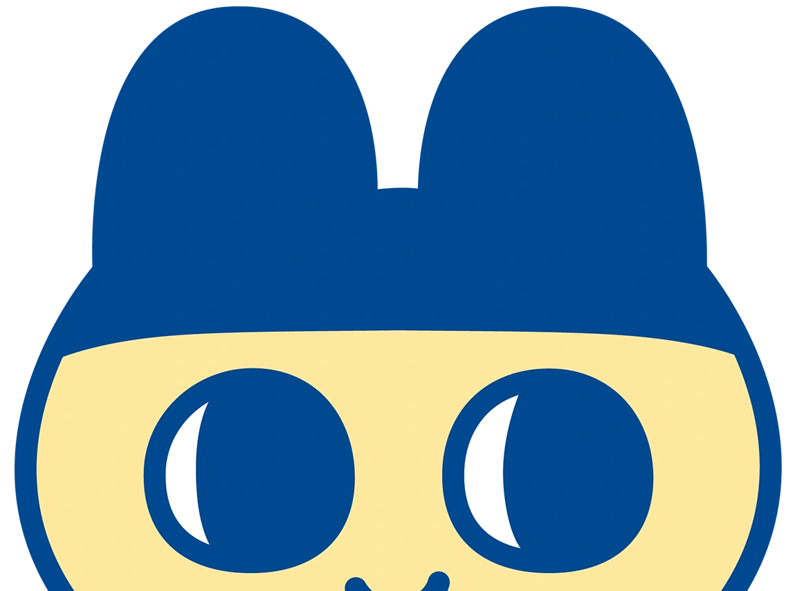

Puede que sepas esto, pero amiwuevo está inspirado en los tamagotchi, incluso el nombre viene de la misma lógica (en japonés "tamago" es huevo y "tomodachi" amigo)
En nuestro propio equipo hemos discutido si debería escribirse amihuevo, amiwuevo o amiwebo (por mamawebo)
Al final amiwuevo ganó, porque Alex no tiene razón